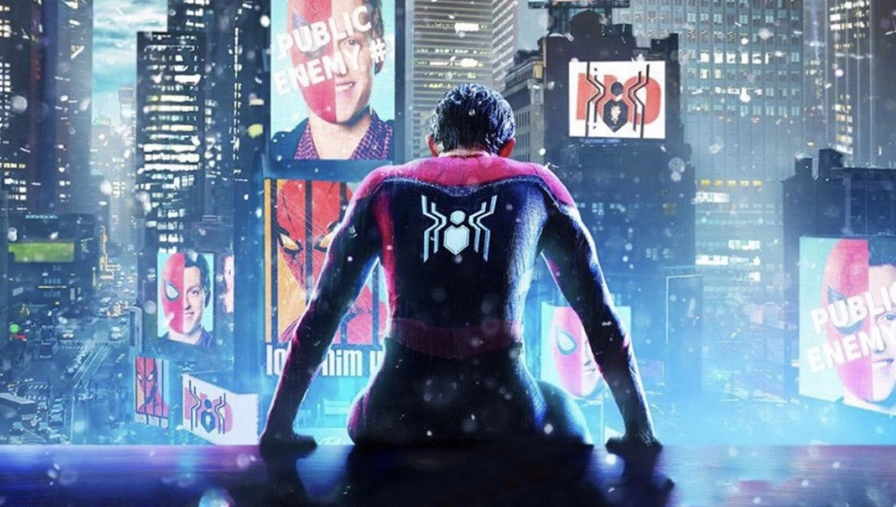
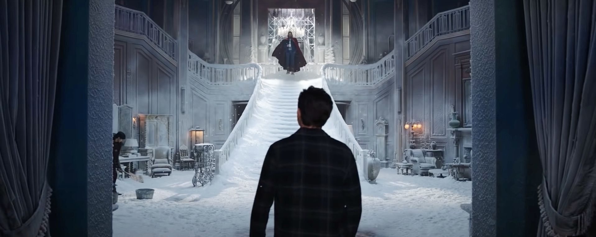
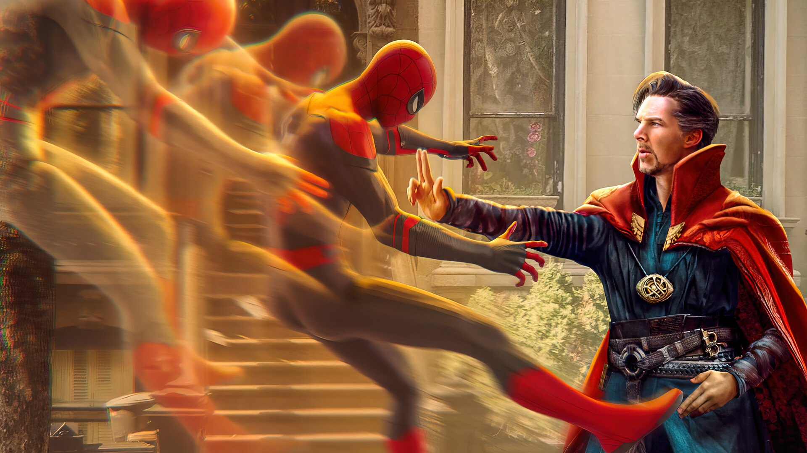

Spider-Man: No Way Home Spoiler recension
På denna sidan så kommer vi gå in djupare på spoilers så om du inte har sett filmen klicka här
När vi ser Doctor Octupus så börjar han att attackera Peter i vetskap om att det är Tobey Maguires Peter Parker (eftersom han har på sig sin Spider-Man dräkt känner han inte igen honom) och det slutar med att Doctor Ock får tag på Peter och Spider-Mans nanotech dräkt intergrerar sig med Octupus armar. Sedan tar Peter av sig sin mask och då ser Doc ock att det inte är "hans" Peter och blir förvirrad. När de har pratat så får Peter kontroll över Doc ocs armar eftersom hans nanotech är kopplad till Tony Starks högteknologiska utrustning så han räddar rektorn och hon säger att hon ska föröka få in Peter och hans vänner. Denna sekvensen tar slut när man hör ett ikoniskt skratt som är William Dafoes Green Goblin och då teleporterar Doctor Strange Peter Parker till sin fristad där han har fångat Lizard. Det som har hänt är att eftersom Peter avbröt Strange när han försökte kasta besvärjelsen så blev den korrupt och det började komma in folk från andra universium (som kallas för multiverse inom Marvel) som vet att Peter Parker är Spider-Man
Snabbspola till när Peter har fångat alla superskurkar och då säger Doctor Strange att han ska skicka hem de till de universium de kom ifrån och detta kommer resultera i att flesta alla dör och detta vill inte Peter men Doctor Strange bryr sig inte. Så det som händer är att Dr Strange och Peter slåss i mirror dimension och Peter lyckas slå honom i den och låsa in honom där.
Spider-Man försöker att bota alla superskurkarna eftersom hans Aunt May tyckte det var det rätta och det höll han med om.